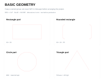
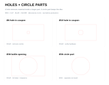
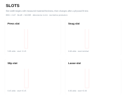
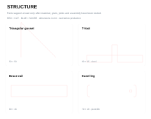
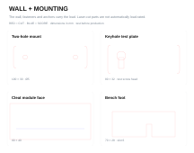
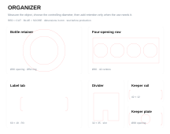
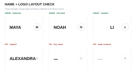
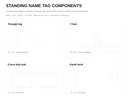
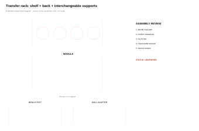

First Laser Projects | Classroom Toolkit
This toolkit supports one connected sequence: name + logo engraving → make it stand → measure + organize → pill-bottle organizer → independent tool holder. The repeated routine is the point:
- paper plan
- measure
- build with exact parts
- fabricate + test
- revise
Start here
Plan before opening Inkscape
Use the reusable fabrication planning worksheet for a problem statement, front/top/side sketches, critical dimensions, part list, operations, assembly sequence, and test evidence.
Move the plan into the file
Follow Paper to Inkscape to set millimetres, bring in named components, set exact dimensions, align, duplicate, classify operations and complete a preflight check.
For a clean base plate with repeated measured holes, start in the Fabrication Plate Builder. Resolve its geometry warnings, download the SVG, then finish labels and project-specific details in Inkscape.
Use measured building blocks
Open the six palettes below. Copy a named group into a project file, then change its dimensions numerically. A palette is a parts shelf, not a finished project.
The download also includes label-free, exact-size individual component SVGs for direct import. Use the palette to choose a family and the individual file when a clean part is faster.
Teach the active sequence
Use the short classroom slide deck for launch, task, quality criteria, new skill and cut-readiness prompts across the first four projects.
Download the complete kit
Download the First Laser Projects kit (ZIP) Open the machine-readable manifest
Every fabrication reference is labelled unverified until a physical test is recorded. Software validation confirms file structure and dimensions; it does not prove fit, strength, mounting performance, or usability.
Inkscape component palettes
Basic Geometry

Rectangle, rounded rectangle, disc and triangle parts.

Hole

Hole-in-part examples beside a circle part so the cut result is explicit.

Slot

Press, snug, slip and loose starting values for a documented 6.00 mm example sheet.

Structure

Gusset, T-foot, brace rail and easel leg.

Wall + Mounting

Mount plate, keyhole study, cleat face and removable foot. Instructor approval is required for mounted loads.

Organizer

Bottle retainer, repeated-opening row, label tab, divider, keeper rail and removable keeper plate.

A hole is a closed cut path inside a larger part; the inside becomes waste and the surrounding material is the useful part. A circle part keeps the disc. The path can be geometrically identical while the manufacturing intent is opposite. Name the group before laying out the sheet.
Project assets

Name + logo files



Standing name tag


Five organizer assemblies
Paper-to-Inkscape student instructions Reusable fabrication planning worksheet
Optional source libraries
Use outside libraries to investigate visual language, mechanisms and precedents, not to bypass measurement or copy a finished submission. Check each asset’s licence, attribution requirements and suitability before reuse. A result shown online is not evidence that its dimensions fit the object in this classroom.
Open the Free Online Design & Fabrication Resource Directory · Work in Progress
Products and laser projects
Etsy tool holders show product variety, use cases, prices, claims, and review themes. The Glowforge Catalog shows laser-cut categories, visual language, and construction ideas. Use both for observation, not copying.
Documented builds
Instructables tool organizers can reveal build sequences, materials, tests, and revisions. Compare what a maker planned with what the build evidence actually demonstrates.
Mechanisms and models
Printables, Thingiverse, and MakerWorld are useful for studying retention, mounting, modularity, adjustment, and fabrication choices. Check the licence on each model.
Assemblies and form
Onshape public documents can show parametric parts and assemblies. Sketchfab can support three-dimensional form studies. Public visibility is not automatic permission to reuse a design.
Graphics and symbols
Openverse, Openclipart, and Noun Project can help students investigate graphic styles, silhouettes, and labels. Verify the individual asset’s licence and required attribution.
Turn research into design
Use Good Idea, Better Product to compare precedents, define measurable improvements, create original geometry, prototype a critical question, and document the revision.